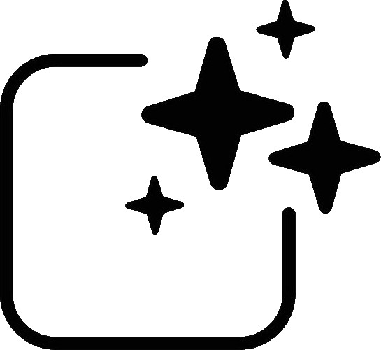
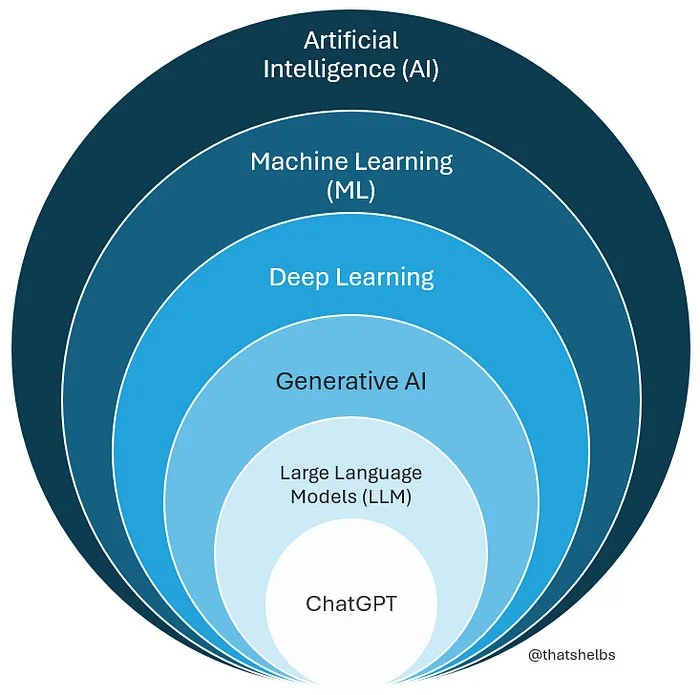

Inteligencia Artificial

Objetivo
Contrastar nuestras ideas sobre la IA con las fuentes de información y generar términos comunes de cómo debería ser usada la IA en los procesos educativos.
¿Qué sabemos de la IA?

¿Qué es un prompt?

Desafío 1
Formen duplas: un integrante ingresará a ChatGPT de OpenAI y el otro a Gemini de Google.
Desafío 2
De forma individual, añadan los documentos que consideren pertinentes para investigar los alcances éticos y morales del uso de la IA en los procesos educativos.
- 380602spa.pdf
- 385877spa.pdf
- 393812spa.pdf
- 393813spa.pdf
- unesco_ia_edu-inv.pdf
- unesco_ia_edu-politicas.pdf
Pueden encontrar los textos en U-Cursos.
Desafío 3
Con su dupla, generen términos comunes sobre cómo debería ser usada la IA en los procesos educativos.
Escriban al menos 4 términos comunes.
Desafío 4
Individualmente, indiquen a la IA que contraste sus términos comunes con los textos.